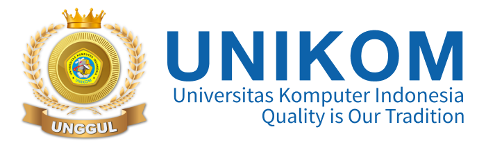
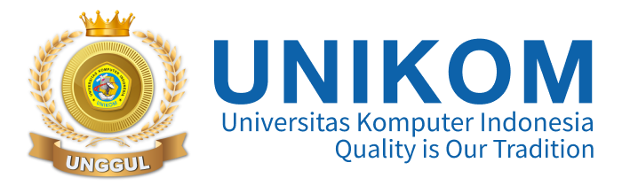

Tentang UNIKOM
UNIKOM memberikan pengalaman yang luar biasa. Kami mengikuti sesi tanya jawab tentang program studi, fasilitas kampus, dan teknologi yang digunakan di sana serta kami mendapatkan di berikan sejumlah materi terkait bagaimana cara memilih Universitas impian, setelah itu kamiii ke perpustakaan unikom untuk sholat dan membac buku sementara. etelah kegiatan unikom kami. kembali ke Cihampelas dan jalan jalan masing masing setelahnya